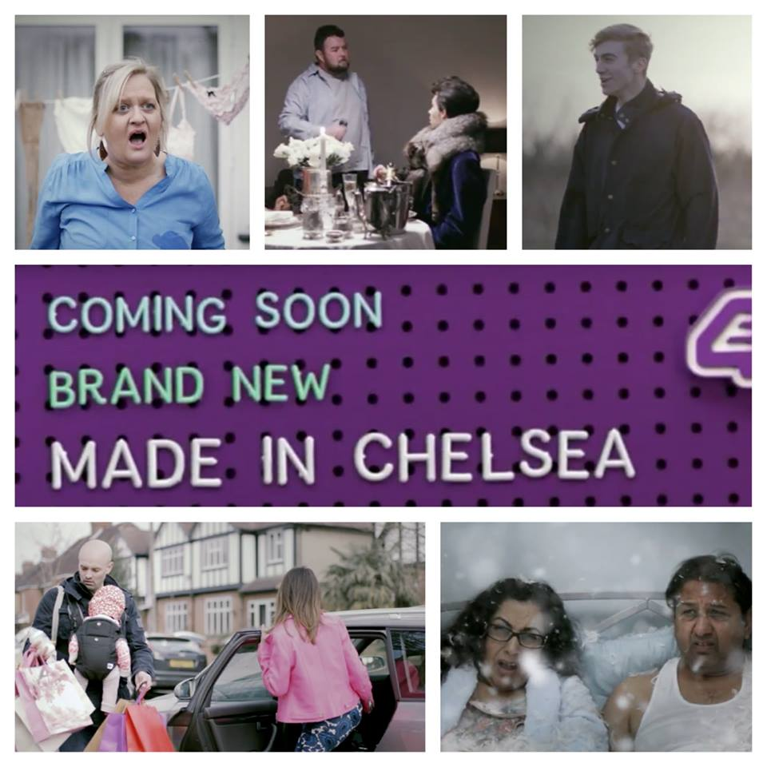

Since 2012, Emma has been signed to Ugly Models and is loving doing photographic and television work with this brilliant agency.
The Ugly Philosophy -"Any beauty can be airbrushed but we want our look to have true character"
Emma is featured on the "Ugly Models" 2016 promotional video at 3:24, and in the Made in Chelsea Advert at 3:37 in Yellow Bikini filming for Charlie Clift (CharlieCliftPhotography.com), Body Confidence Campaign #everybodysbeachbodyready.
2018
TV : Commercial "World Animal Protection Bear Lottery"
Watch the advertisement hereRole: Lottery winner
Directed by: Stephen Walker / DTV
TV : Programme "Make me a Dealer"
Emma is featured on a new television programme on BBC One called "Make me a Dealer" where Antiques expert Paul Martin advises 2 amateur Antique Dealers
Watch Emma's Epison on BBC One at 16:30 on Friday 9th November 2018.
2017
Photos: "Crisis" (Charity for homeless people) Christmas Campaign 2017
Role: Party guest
Directed by: Catalyst Works
TV: " French Collection" Antiques/Upcycling Programme
Role: Contributor / Contestant
Directed by: Reef Television for Channel 4 - Available on 4OD
Corporate : Training Video for GPs
Role: Asthma Sufferer
Directed by: Glaxo Smith Klein
Corporate : Internal Training Video for McColls
Role: Happy Customer
Directed by: McColls
2016
Photos: For Pharmaceutical Company Website
Role: Patient
Directed by: Mass
Photos/TV : "Russell Howards Good News"
Role: Chav in Bathroom
Directed by: Avalon
TV : Commercial "Paddy Power" "Coach Driver"/"Away day"
Role: Football fan at burger van
Directed by: Randy Krallman / Smuggler
TV : Commercial "Paddy Power" - "Turnaround Steward"
Role: Football fan in seats
Directed by: Randy Krallman / Smuggler
TV : Commerical "Gala Bingo"
Role: Cafe Customer
Directed by: Cravens
2015
TV : Commercial "Made In Chelsea" -"Disturbing The Peace"- Trailer
Role: Housewife in rubber gloves
Directed by: E4
TV : Charlie Brookers Weekly Wipe - Series 3 - Ep 2
Role: Natalie Bennett (Green Party) Lookalike
Directed by: Zeppotron
Photos : Online "Everybody's Beach Body Ready! - Body Confidence Campaign"
Role: Confident size 16 Girl in Yellow Bikini
Directed by: Charlie Clift Photography
2014
TV : Commercial "Jackpot Joy Sponsors Million Pound Drop"
Role: Sofa wife
Directed by: Steve Kemsley / Sassy Films
TV : Never Mind The Buzzcocks - Series 8 Episode 28 Watch Here
Role: Line Up - Number 4
Directed by: Toby Baker
2013
Film (Short) : Pebble Moon
Role: Social worker
Directed by: Lian Furness / Yellow Wellie Productions
"Pebble Moon" Official Teaser Trailer from HHF on Vimeo.
TV : Commercial "Maplins" (Sponsors Gadget Man - ident)
Role: Wi-Fi wife
Directed by: Steve Kemsley / Sassy Films
Film (Feature) : "Electricity"
Role: Clubber
Directed by: Bryn Higgins / Stone City Films
2012
TV : "Lax a Daisy Sketch" - "Toast Of London" Series 1 - Episode 3
Role: Executive in Pearl necklace
Directed by: Michael Cumming / Objective